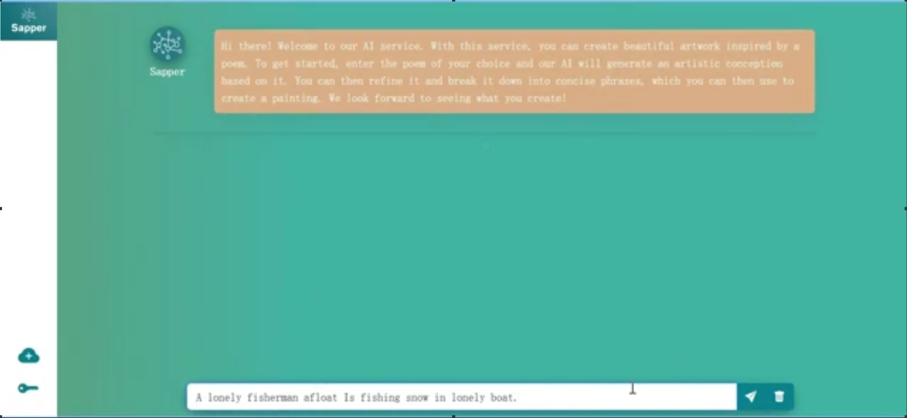
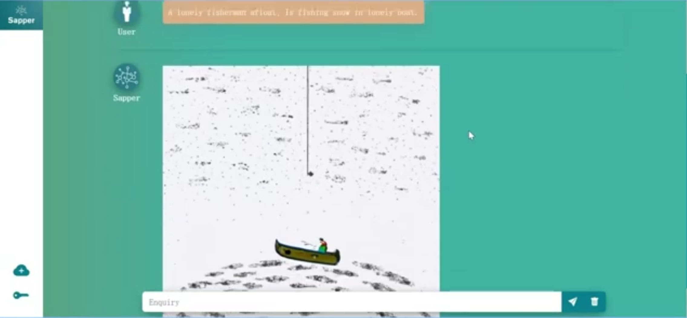
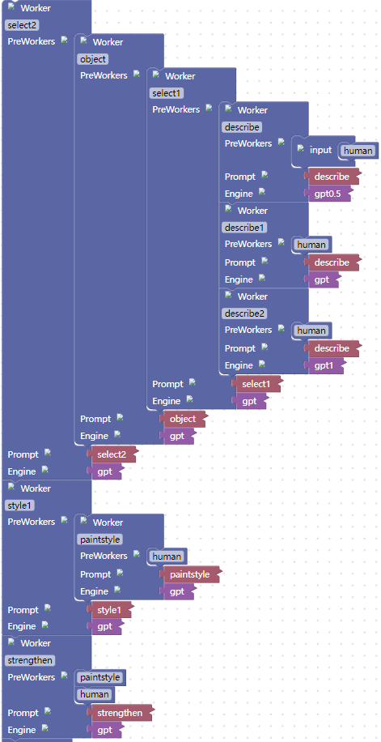
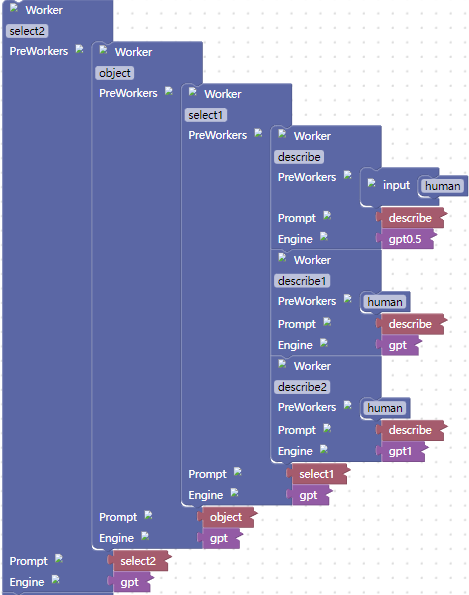
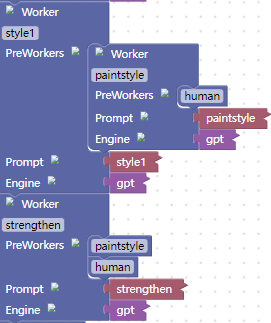
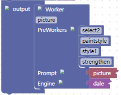

绘小诗 (PoeticVisons)
Put on the glasses powered by AI——A poetic journey across time and space is ready to start!
1 APPLICATION SCENARIO AND END USERS
Let me begin by exploring the usage situations, targeted end users and their requirements for PoeticVisions.Let me begin by exploring the usage situations, targeted end users and their requirements for PoeticVisions.
1.1 Create Cultural and Creative Products
Collaborate with historical landmarks (such as the Red Cliff, Yueyang Tower, the Forbidden City) or the homes of famous figures (such as the Du Fu Thatched Cottage) to launch cultural and creative commemorative products (such as wall decorations, bookmarks, postcards, calendars, etc).
1.2 Produce Educational Products
Package them into a small program for studying ancient poetry;
Create educational toys (such as puzzles);
Illustrate ancient poetry books.
1.3 END-USERS And Their Requirements
students who study ancient poetry: Use images to make their reading of ancient poetry more vivid and interesting, thus enhancing their interest in learning;
teachers: Use visual aids to assist in teaching, helping students better understand the poems they are studying. At the same time, teachers can use art to stimulate students' creativity and imagination;
tourist attractions: Create cultural and creative products to promote the attractions, using AI as a gimmick to attract tourists;
book authors: Create illustrations for the book.
2 EXPLORATIONS WITH LLM
Now, we describe how we learn the task knowledge from the LLM, evaluate the effectiveness of our experiment prompts and summary the task challenges
2.1 Discourse With LLM
By interacting with large models, we have summarized two key points to keep in mind when creating a painting:
Extracting visual images from poetry;
Selecting a suitable artistic style and analyzing the style of the painting atmosphere in detail.
2.2 Prompt Experimentation
To improve the quality of artistic interpretation of ancient poetry, direct translation using a large language model may not be sufficient, as it may produce stiff translations and even copy parts the model cannot understand. Instead, interpreting the poetry multiple times using a large language model and summarizing the results can provide a more detailed scene description, surpassing the quality of direct translation.
Once a style (e.g., ink wash painting) is selected for the ancient poetry, the large language model can enhance the expressive power of the painting created by the text-to-image model by providing dimensions such as artistic conception, modeling, line, and color based on the content of the poetry.
This approach results in a more charming and vivid painting for the poetry.
2.3 Challenges
The main challenge lies in the connection between each worker. In the chain design, the feedback from the previous worker needs to be used as the input for the next worker. To ensure that the feedback format matches the prompt of the next worker, we need to add a series of restrictions to the prompt of the previous worker to constrain the format of the feedback. At the same time, we also need to take corresponding measures to minimize the random fluctuations in the answers from the previous worker.
3 AI-CHAIN DESIGN

Figure-1: AI Chain of PoeticVisons
Then, I will introduce my AI chain design and its major features.
The PoeticVisions can be broken down into the following functional modules, Poet Analysis Module and Picture Generation Module.
3.1 Poet Analysis Module
After inputting a poetry, the poet analysis module parses the poetry and provides style and imagery information for generating a painting.
It can be further divided into two sub-modules: Imagery Extraction Module and Style Construction Module.
The poetry is input into the imagery extraction module and the style construction module, which return the imagery and style information, respectively.
3.2 Imagery Extraction Module
The imagery extraction module can be broken down into four Software 3.0 workers: Artistic Conception Generation Worker, Artistic Conception Reconstruction Worker, Artistic Conception Decomposition Worker and Imagery Filtering Worker.
After inputting the poetry, three artistic conception generation workers (i.e., a prompt committee) independently generate three artistic conceptions respectively, and provides them to the artistic conception reconstruction worker.
The artistic conception reconstruction worker (a composer) analyzes and summarizes the received artistic conceptions, generating an improved new artistic conception and providing it to the artistic conception decomposition worker.
The artistic conception decomposition worker (an input rewriter) decomposes the artistic conception into a series of concise phrases and provides them to the imagery filtering worker.
The imagery filtering worker (another input rewriter) screens the suitable phrases for painting and returns them as the imagery information.
3.3 Style Construction Module
The style construction module can be broken down into three Software 3.0 workers: Painting Style Selection Worker, Atmosphere Analysis Worker and Visual Enhancement Worker.
After inputting the poetry, the painting style selection worker (a selection commander) analyzes the poetry content, selects the most suitable painting style, and provides it to the atmosphere analysis worker.
The atmosphere analysis worker (an information inquirer) organizes three adjectives that describe the painting style characteristics and then provides the generated adjectives and the received painting style to the visual enhancement worker.
The visual enhancement worker (a content creator) combines the painting style and the poetry, provides two dimensions that can enhance the visual sense, and provides two adjectives for each dimension. Finally, the visual enhancement worker returns the received painting style characteristics, painting style, and the dimensions as style.
3.4 Painting Generation Module
Generate a painting based on the received image and style.
3.5 Supplementary Content.
There are two major constraints that are necessary in the prompt. I implemented them as output formatter and context control.
In the image generation module and image reconstruction module, it is necessary to limit the number of words used to allow the LLM to self-assess the importance of the content being described, so that the limited number of words focuses on the most essential content and avoids verbose responses;
Different measures should be taken in the image screening worker, painting style selection worker, atmosphere analysis worker, and visual enhancement worker to limit the response format and make the entire prompt analysis flow more coherent.
4 RAPID PROTOTYPING PROCESS
Finally, let me describe how my AI chain design and implementation has evolved and been enhanced through the rapid prototyping process, and also discuss some potential future enhancements.
4.1 Original Version
These were three issues with the prompt design in earlier versions and their solutions.
One describes Worker is used to generate artistic conception, resulting in the absence of image in artistic conception. Later, two describe workers are added, and three workers are configured with gpt3.5 models of different temperature, which enriches the generated artistic conception and makes it complete;
Earlier version did not carry on the word limit, the generated artistic conception in addition to the visible artistic conception can be used to paint, will also be mixed with the ancient poetry character appreciation Angle and other aspects of the content, very miscellaneous, follow-up through the test estimated the range of visible artistic conception of the word limit in prompt, make the artistic conception description more concise;
The early version does not attach importance to the coherence of AI Chain, the output of the previous Worker is very stiff when added to the prompt of the latter worker, which makes the prompt lose the conciseness and fluency of natural language, and the LLM is not easy to understand. The format limitation is added to the prompt later. To a large extent, it increases the coherence of AI Chain.
4.2 Problem Resolution
In the current version, the program can properly handle poetry that directly express artistic conceptions.
4.3 Future Improvement
Some poetry containing more abstract rhetorical techniques (such as exaggeration, metaphor, etc.) or poetry with hidden imagery, PoeticVisions is unable to accurately find the corresponding imagery or has issues with missing imagery.
In the subsequent versions, we will focus on optimizing these two aspects.
5 APPLICATION USAGE

Choose a poem with artistic conception that you like and PoeticVisons will automatically generate a painting for you based on the content of the poem
6 SAPPER STRUCTURE AND USER EXPERIENCE
6.1 Poet Analysis Module
6.2 Imagery Extraction Module
6.3 Imagery Extraction Module
6.4 Painting Generation Module
6.5 User Experience
Sapper is a revolutionary tool that helps programmers overcome entry barriers and rapidly bring their ideas to life. "PoeticVisons" serves as a perfect example of how Sapper can be used to quickly realize creative ideas. Even though I lacked any formal training in drawing, Sapper's interaction with me enabled it to identify my needs and offer essential insights on program design from a professional artist's perspective. The outcome was impressive, to say the least. Sapper has introduced a new era of minimalist programming, enabling us to code on the go with ease.